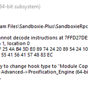
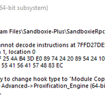

How to make Proxifier and Sandboxie Plus love each other?
Posted: Thu May 20, 2021 7:11 pm
Hi,
Since yesterday I'm trying to figure out how can I male Sandboxie Plus and Proxifier Portable to work together to no avail.
Proxifier has the rule to tunnel Brave. Brave itself runs in the sandbox. Since Brave is running in the sandbox Proxifier can't recognize it anymore and it keeps showing the following error.

Sure I could just run Proxifier in the sandbox too, but that's not how I want it.
I use the latest Proxifier Portable version and the latest Sandboxie version as well on Windows 10!
Any help is much appreciated.
Thanks in advance.
Since yesterday I'm trying to figure out how can I male Sandboxie Plus and Proxifier Portable to work together to no avail.
Proxifier has the rule to tunnel Brave. Brave itself runs in the sandbox. Since Brave is running in the sandbox Proxifier can't recognize it anymore and it keeps showing the following error.

Sure I could just run Proxifier in the sandbox too, but that's not how I want it.
I use the latest Proxifier Portable version and the latest Sandboxie version as well on Windows 10!
Any help is much appreciated.
Thanks in advance.